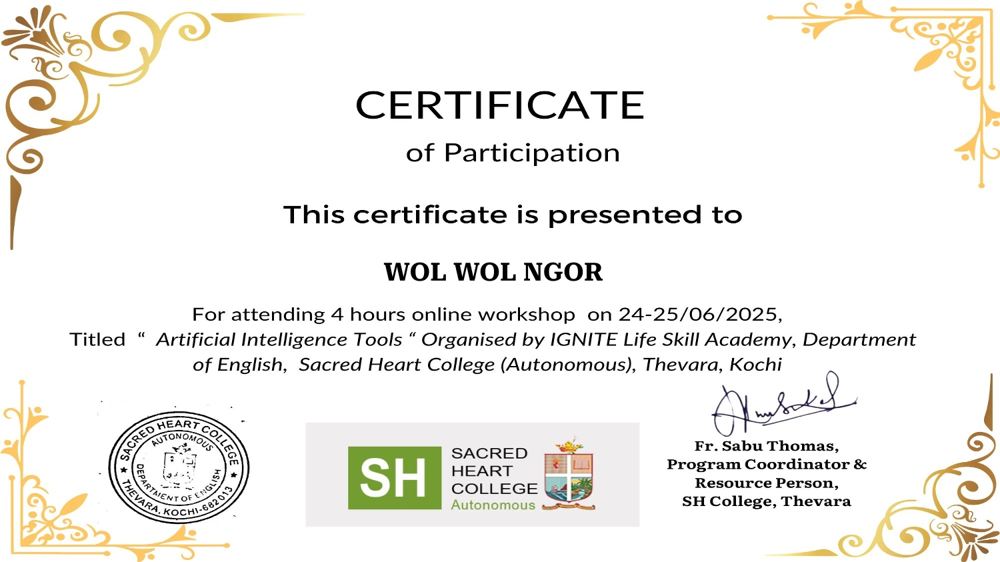
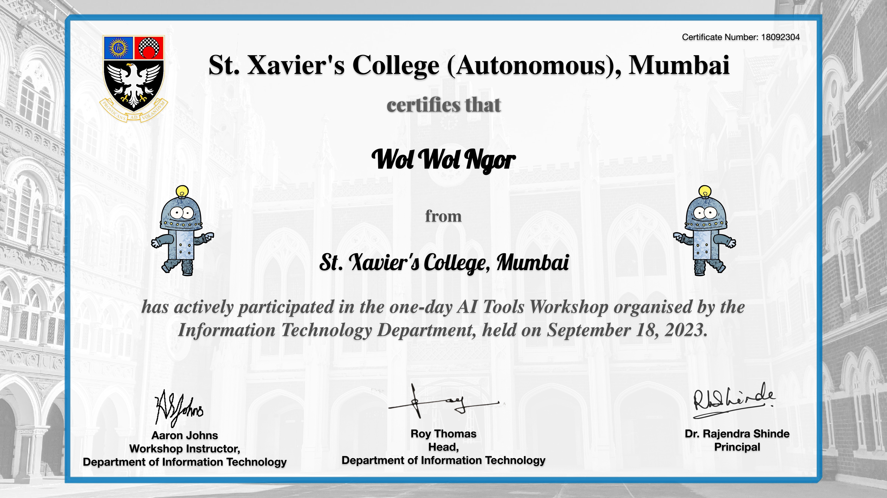

Hello, I'm Raphael!
System Identification
Technical Ecosystem
Backend & Engineering
Mobile & Frontend
Systems & Infrastructure
IoT & Security
Experience
IT Instructor & Support
2026 - PresentProviding computing instruction and technical support within educational institutions, accompanying students in their technical learning journey.
Software & Systems Developer
2025 - PresentBuilding full-stack solutions, configuring Linux Mint environments, and managing application deployments across web and mobile platforms.
Featured Projects

Smart Streetlight System
An IoT automation project built with Arduino and Tinkercad, utilizing ultrasonic and light-dependent sensors for intelligent energy management.

SecureSentinel-XDR
A cybersecurity project focused on extended detection and response, deployed using Docker containers and advanced incident logging tools.

Requisition System
Requisition Platform. Streamline your approvals, track spending, and manage resources efficiently.

SmartStore POS
A robust point-of-sale application designed to streamline retail management, inventory tracking, and transaction processing.

Socket Mobile App
A mobile application leveraging cross-platform frameworks and socket programming for efficient real-time communication.

Library Management System
A comprehensive system designed to track book inventories, manage user loans, and streamline administrative tasks for library staff.
Live Open Source Activity
Achievements & Credentials
BSc Information Technology
St. Xavier’s College, Mumbai
Diploma in Computing
Don Bosco Vocational Training Centre
Systems Administration
Applied Open Source Technologies
Artificial Intelligence
IGNITE Life Skill Academy, Sacred Heart College, Kochi

Advanced AI Tools Mastery
IGNITE Life Skill Academy, Sacred Heart College, Kochi

AI Tools Workshop
St. Xavier's College - IT Department
Notable Milestones
Linux Fundamentals Trainer
April 2026Prepared and conducted a dedicated training session on Linux fundamentals for absolute beginners, developing comprehensive reference cheat sheets and core command guides for the attendees.
IoT Automation Deployment
January 2026Successfully designed, documented, and demonstrated a fully functional "Smart Streetlight System" prototype utilizing Arduino and Tinkercad for intelligent energy management.
System Build History
RaphaOS & Command Palette Integration
Current Release- FEATURE Added Ctrl+K command palette for power users.
- FEATURE Rebranded environment to RaphaOS.
- UPDATE Integrated system changelog telemetry.
API & Modal Architecture
Previous Release- FEATURE Integrated live GitHub API repository sync.
- FEATURE Deployed dynamic glassmorphism project modals.
- UPDATE Upgraded tech stack gauges to animated ecosystem matrices.
Core System Initialization
Initial Deployment- INIT Bootstrapped Linux-inspired dark architecture.
- INIT Deployed terminal-styled developer console.
- INIT Configured edge-to-edge canvas and particle engines.
What I Do
Software Engineering
Developing robust backend services and cross-platform mobile applications.
System Administration
Deploying, securing, and automating Linux-based server environments.
IoT Development
Designing smart, sensor-driven hardware solutions with Arduino.
0
Projects Completed
0
Core Technologies
0
Years Experience